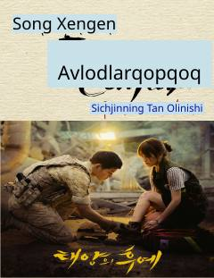

QAMaxsus kuchlar kapitani va shifokorning Urukdagi taqdiriy uchrashuvi va muhabbat qissasi.
Ushbu asar mashhur koreys seriali asosida yozilgan bo'lib, maxsus kuchlar kapitani va iste'dodli shifokor o'rtasidagi murakkab sevgi munosabatlarini hikoya qiladi. Urukdagi xavfli vaziyatlar fonida qahramonlar o'z his-tuyg'ularini qayta anglab yetishga va hayotiy qadriyatlarini sinovdan o'tkazishga majbur bo'lishadi. Kitob insoniy munosabatlar, burch va muhabbatning qiyin tanlovlari haqida so'z yuritadi.